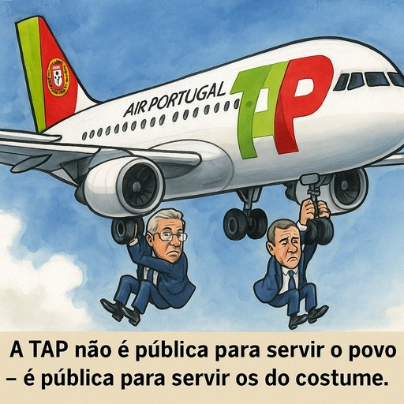

Publicado em 2025-07-11 10:43:49
Desde há décadas que a TAP – Transportes Aéreos Portugueses – tem sido apresentada como um “activo estratégico do Estado”.
Mas sob essa máscara de orgulho nacional, esconde-se um elefante branco alimentado por dinheiros públicos, usado como moeda polÃtica, trampolim de nomeações e instrumento de poder disfarçado de serviço público.
É o que fizeram dela.
A companhia aérea que já foi sÃmbolo de ligação ao mundo lusófono transformou-se numa empresa:
Desde 2020, a TAP recebeu mais de 3.200 milhões de euros do Estado.
Esse valor, superior a todos os investimentos públicos em cultura, ciência ou ferrovia juntos num ano, foi justificado com a retórica habitual:
“É para proteger os postos de trabalho, o hub de Lisboa, o interesse nacional.”
Mas quando se faz as contas, percebe-se a falácia:
Quando os polÃticos dizem que manter a TAP pública é “garantir a soberania”, estão a esconder o verdadeiro motivo:
manter o controlo sobre uma máquina de poder.
A TAP pública não é um instrumento de desenvolvimento — é um feudo polÃtico-partidário, gerido com critérios ideológicos e favores internos.
Portugal paga — e pouco recebe.
Enquanto os polÃticos defendem a TAP com fervor teatral:
A TAP não precisa de ser 100% estatal para servir Portugal.
Precisa de ser bem gerida, profissional, eficiente e transparente.
O problema não está na bandeira na fuselagem.
Está nos fantasmas instalados no cockpit.
E enquanto os polÃticos continuarem a tratar a TAP como campo de manobras,
o paÃs continuará a voar em piloto automático — rumo ao abismo financeiro da conveniência.
Resumo: Todas as narrativas de polÃticos e elites corruptas são falsas e não são sustentadas,nem por factos nem por números, como acabámos de demonstrar.
Sao pura mentira para manterem tachos e afundar ainda mais Portugal.
Francisco Gonçalves
Voz livre contra o teatro polÃtico, observador de um paÃs que precisa de levantar voo — mas sem aviões cheios de mentira
“A TAP não é sÃmbolo de soberania. É sÃmbolo de captura.
Captura por partidos, por compadrios, por interesses obscuros que voam sempre em classe executiva — à s custas do povo.â€â€” Francisco Gonçalves